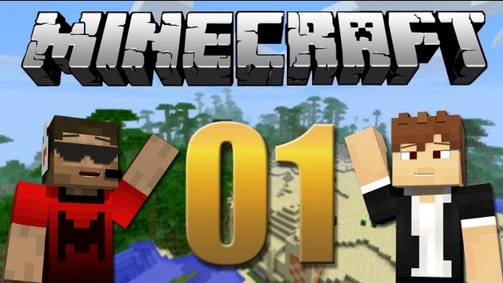
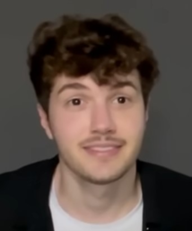
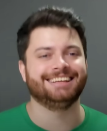
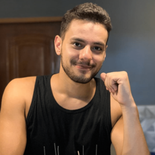
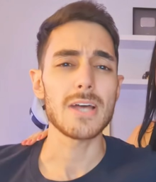
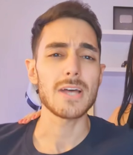
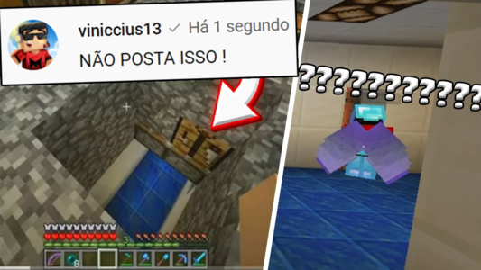

A série "Em Busca da Casa Automática", criada por Viniccius13, é um marco no YouTube brasileiro voltado para Minecraft técnico. Nela, o objetivo é construir uma base totalmente automatizada, com sistemas de redstone, farms complexas e soluções inteligentes. A série se destaca pela didática, qualidade na edição e criatividade, ensinando conceitos avançados enquanto diverte. É ideal para quem gosta de Minecraft técnico e projetos bem elaborados.
A série é gravada por Viniccius e Davi - além de outros participantes recorrentes
Viniccius e Davi são os principais participantes e anfitriões da série. Viniccius apareceu em todos os episódios, enquanto Davi esteve ausente em algumas ocasiões.
Napoleon, irmão de Viniccius, é o recorrente que mais apareceu, além de ser o principal editor do canal de seu irmão. Outros participantes incluem Forever (que apareceu em 2016 e 2018), SOldierBr (que apareceu em 2017), Hawk (que apareceu em 2016), Willzy, Luis23 e Brunim Neet's (que apareceram em 2017).
 .png) 

O esconderijo sem dúvidas é um dos grandes mistérios da série. Uma base subterraena construida no começo da série, mesmo após anos de série o Viniccius nunca entrou em detalhes sobre o que há dentro dela, sempre quando comentado sobre o assunto, logo ele muda de assunto para evitar falar sobre o esconderijo.
Com 12 milhoes de visualizacoes, sem dúvidas é um dos vídeos mais assistidos é o primeiro episódio da casa automática.
Um dos vídeos mais memoraveis que o Vini fez. O maior desafio de todos, destruir a maior montanha do mundio dele, rendendo 7,5 milhoes de visualizacoes, impressionando todo mundo com tal feito.
Uma das farms mais clássicas feito pelo Vini, rendendo 7,5 mihoes de visualizacoes. Uma das farms mais clássicas do mundo dele
A produção da série Em Busca da Casa Automática envolve um processo cuidadoso de gravação, edição e criação de miniaturas. Os episódios são gravados por Viniccius13 e Davi, com participações recorrentes de outros criadores, como Forever. Projetos mais complexos, como a farm de Guardian ou escavações no Nether, podem levar mais de duas horas para serem gravados. Em algumas gravações, é utilizado um computador secundário como "Cameraman", uma brincadeira criada por Viniccius para capturar time lapses.
Com o crescimento da série, a edição dos vídeos, inicialmente feita por Viniccius, passou a ser responsabilidade de seu irmão, Napoleon13. Os episódios geralmente duram entre 20 e 35 minutos, sendo que os especiais podem chegar a quase uma hora. As gravações são armazenadas em um HD separado, e as imagens das miniaturas são nomeadas de forma organizada, como "aventuradaviXX".
As miniaturas são produzidas no Photoshop pelo próprio Viniccius. No começo, eram baseadas em capturas do mundo da série, mas com o tempo foram substituídas por versões desenhadas em estilo cartunizado. As thumbnails geralmente trazem os personagens Viniccius e Davi nas laterais, com o número do episódio em destaque — inicialmente centralizado, depois realocado para o canto inferior direito.
Farm de Happy Ghast #386